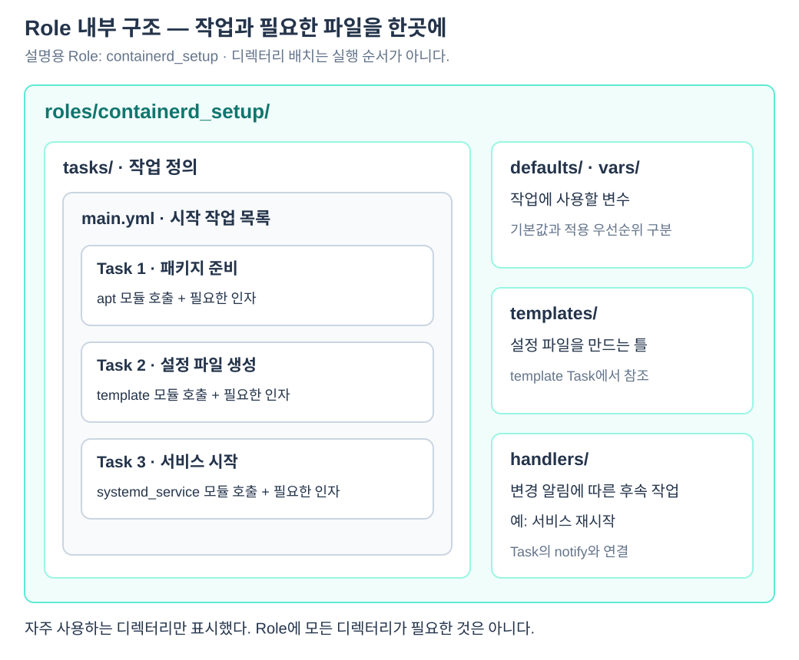

Ansible 작업을 읽을 때는 가장 작은 요청인 Task부터 보면 된다. Task는 Module이라는 기능에 입력값을 전달하고, Play는 그 작업을 어느 서버에서 실행할지 정한다. Play를 담은 파일이 Playbook이며, 반복되는 작업과 관련 파일을 분리한 단위가 Role이다. 이 문서는 작은 작업이 큰 실행 구조로 묶이는 과정과 모듈의 동작 차이를 설명한다.
Task는 요청이고 Module은 수행 기능이다
예를 들어 서버에서 hostname 명령을 실행하는 작업은 다음처럼 적는다. 이 코드는 실행 대상을 포함하지 않은 Task 조각이다.
- name: 서버 이름 확인
ansible.builtin.command:
cmd: hostname
name은 작업 설명, ansible.builtin.command는 사용할 모듈, cmd는 그 모듈의 입력이다. Task에는 사용할 모듈과 그 모듈에 전달할 인자를 적는다. 모듈은 목적에 따라 파일을 관리하거나 패키지를 설치하거나 명령을 실행한다.
| 모듈 예 | 수행 기능 |
|---|---|
ansible.builtin.command |
지정한 명령 실행 |
ansible.builtin.apt |
Debian·Ubuntu 패키지 관리 |
ansible.builtin.template |
템플릿을 처리해 대상 파일 생성·갱신 |
ansible.builtin.systemd_service |
systemd 서비스 상태 관리 |
따라서 Ansible이 하는 모든 일이 단순히 셸 명령 문자열을 나열하는 것은 아니다. 예를 들어 패키지 모듈에 state: present를 지정하면 설치 여부를 확인하고 필요한 경우 설치할 수 있다.
이미 원하는 상태라면 추가 변경을 하지 않는 성질을 멱등성이라고 한다. 많은 관리 모듈이 이를 지원하지만 임의의 command 실행까지 자동으로 멱등적이 되는 것은 아니다.
하나의 Play는 대상과 작업 목록을 연결한다
다음은 CP 서버들에서 서버 이름과 실행 계정을 조회하는 플레이북 예시다. 인벤토리에는 kube_control_plane 그룹과 접속 정보가 준비돼 있다고 가정한다.
- name: CP 서버 점검
hosts: kube_control_plane
become: true
tasks:
- name: 서버 이름 확인
ansible.builtin.command:
cmd: hostname
- name: 실행 계정 확인
ansible.builtin.command:
cmd: id -un
최상위 목록 항목 하나가 Play다. hosts로 대상 그룹을 고르고 tasks에 수행할 작업을 적는다. 각 Task는 ansible.builtin.command 모듈과 실행할 명령을 지정한다. name은 사람이 로그에서 작업을 구분하기 위한 설명이다.
플레이북은 여러 Play를 포함할 수 있다. 예를 들어 CP 점검 Play 다음에 Worker 점검 Play를 둘 수 있다. 기본적으로 Play와 그 안의 Task는 작성된 순서로 진행되지만, 각 서버에 대한 작업은 병렬로 수행될 수 있다.
이 예시를 check.yml로 저장했다면 다음 명령으로 실행한다.
ansible-playbook -i inventory/lab/hosts.yaml check.yml
인벤토리 파일은 대상을 제공하고 check.yml은 실행할 절차를 제공한다. YAML이라는 파일 형식은 같아도 역할은 다르다.
Role은 관련 작업을 묶으며 필수 계층은 아니다
설정 파일, 변수, 여러 Task를 기능별로 관리하려면 Role을 사용한다. 다음은 설명용 Role 이름을 사용한 예시다.
- name: 클러스터 노드 준비
hosts: k8s_cluster
become: true
roles:
- containerd_setup
Play는 대상을 정하고 containerd_setup Role을 참조한다. Role 내부의 작업과 파일이 그 대상에 적용된다. 이름을 참조한 Role은 실제로 Ansible이 찾을 수 있는 위치에 존재해야 한다.

같은 Play에 Role과 직접 작성한 Task를 함께 둘 수도 있다. Role은 관련 코드를 관리하기 위한 단위이지 Play와 Task 사이에 반드시 있어야 하는 단계는 아니다.
애드혹 명령은 작업 하나를 바로 실행한다
짧은 조회를 위해 매번 플레이북 파일을 만들 필요는 없다. 다음 명령은 인벤토리의 모든 서버에서 실행 계정을 조회한다.
ansible all \
-i inventory/lab/hosts.yaml \
-m ansible.builtin.command \
-a 'id -un'
all은 대상, -i는 인벤토리, -m은 모듈, -a는 모듈에 전달할 인자다. 이런 일회성 실행을 애드혹 명령이라고 한다. 플레이북 실행에는 ansible-playbook, 모듈 작업을 바로 실행할 때는 ansible CLI를 사용한다.
예시 출력은 다음과 같다.
cp-01 | CHANGED | rc=0 >>
root
rc=0은 실행한 명령의 정상 종료, root는 실행 계정을 나타낸다. command 모듈은 별도 지정이 없으면 명령 실행을 변경으로 보고하므로, 이 예시의 CHANGED만으로 서버 설정이 바뀌었다고 판단해서는 안 된다. id -un은 조회 명령이다.